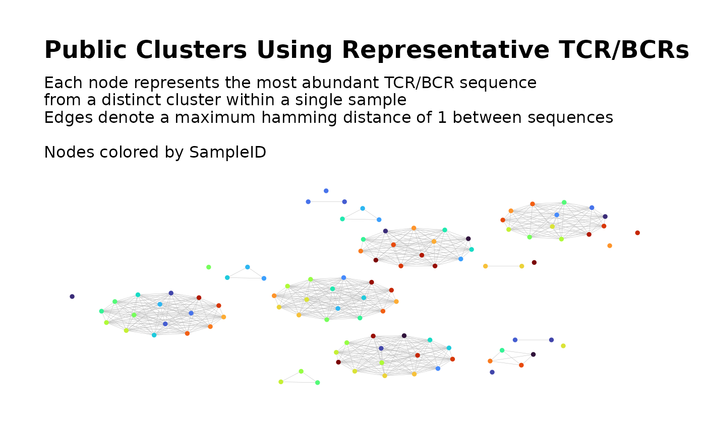

Build Global Network of Public TCR/BCR Clusters Using Representative Clones
buildPublicClusterNetworkByRepresentative.RdAlternative step in the workflow
Searching for Public TCR/BCR Clusters.
Intended for use following findPublicClusters()
in cases where
buildPublicClusterNetwork()
cannot be practically used due to the size of the full global network.
Given cluster-level metadata for each sample's filtered clusters, selects a representative TCR/BCR from each cluster, combines the representatives into a global network and performs network analysis and cluster analysis.
Usage
buildPublicClusterNetworkByRepresentative(
## Input ##
file_list,
input_type = "rds",
data_symbols = "cdat",
header, sep, read.args,
seq_col = "seq_w_max_count",
count_col = "agg_count",
## Network Settings ##
dist_type = "hamming",
dist_cutoff = 1,
cluster_fun = "fast_greedy",
## Visualization ##
plots = TRUE,
print_plots = FALSE,
plot_title = "auto",
plot_subtitle = "auto",
color_nodes_by = "SampleID",
color_scheme = "turbo",
...,
## Output ##
output_dir = NULL,
output_type = "rds",
output_name = "PubClustByRepresentative",
pdf_width = 12,
pdf_height = 10,
verbose = FALSE
)Arguments
- file_list
A vector of file paths where each file contains the cluster-level metadata for one sample's filtered clusters. Passed to
loadDataFromFileList().- input_type
A character string specifying the file format of the input files. Options are
"csv","rds"and"rda". Passed toloadDataFromFileList().- data_symbols
Used when
input_type = "rda". Specifies the name of the data frame within each Rdata file. Passed toloadDataFromFileList().- header
For values of
input_typeother than"rds"and"rda", this argument can be used to specify a non-default value of theheaderargument toread.table(),read.csv(), etc.- sep
For values of
input_typeother than"rds"and"rda", this argument can be used to specify a non-default value of thesepargument toread.table(),read.csv(), etc.- read.args
For values of
input_typeother than"rds"and"rda", this argument can be used to specify non-default values of optional arguments toread.table(),read.csv(), etc. Accepts a named list of argument values. Values ofheaderandsepin this list take precedence over values specified via theheaderandseparguments.- seq_col
Specifies the column in the cluster-level metadata that contains the representative TCR/BCR sequence for each cluster. Accepts a character string containing the column name or a numeric scalar containing the column index. By default, uses the sequence with the maximum clone count in each cluster.
- count_col
Specifies the column in the cluster-level metadata that contains the aggregate clone count for each cluster. Accepts a character string containing the column name or a numeric scalar containing the column index.
- dist_type
Passed to
buildRepSeqNetwork()when constructing the global network.- dist_cutoff
Passed to
buildRepSeqNetwork()when constructing the global network.- cluster_fun
Passed to
buildRepSeqNetwork()when performing cluster analysis on the global network.- plots
Logical. Should plots of the global network graph be produced?
- print_plots
Logical. If plots of the global network graph are produced, should they be printed to the R plotting window?
- plot_title
Passed to
addPlots()when producing plots of the global network graph.- plot_subtitle
Passed to
addPlots()when producing plots of the global network graph.- color_nodes_by
Passed to
addPlots()when producing plots of the global network graph. Valid options include the default"SampleID", as well as node-level properties (seeaddNodeNetworkStats) and sample-level cluster properties (seegetClusterStats), which correspond to the representative TCRs/BCRs and the original sample-level clusters they represent, respectively.- color_scheme
Passed to
addPlots()when producing plots of the global network graph.- ...
Other arguments to
addPlots()when producing plots of the global network graph.- output_dir
Passed to
saveNetwork()after constructing the global network.- output_type
Passed to
saveNetwork()after constructing the global network.- output_name
Passed to
saveNetwork()after constructing the global network.- pdf_width
Passed to
saveNetwork()after constructing the global network. Only applicable ifplots = TRUE.- pdf_height
Passed to
saveNetwork()after constructing the global network. Only applicable ifplots = TRUE.- verbose
Logical. If
TRUE, generates messages about the tasks performed and their progress, as well as relevant properties of intermediate outputs. Messages are sent tostderr().
Details
From each filtered cluster in each sample's network, a representative TCR/BCR is selected. By default, this is the sequence with the greatest clone count in each cluster. The representatives from all clusters and all samples are then used to construct a single global network. Cluster analysis is used to partition this global network into clusters. Network properties for the nodes and clusters are computed and returned as metadata. A plot of the global network graph is produced, with the nodes colored according to sample ID.
Within this network, clusters containing nodes from multiple samples can be
considered as the skeletons of the complete public clusters. The filtered cluster
data for each sample can then be subset to keep the sample-level clusters whose
representative TCR/BCRs belong to the skeletons of the public clusters. After
subsetting in this manner,
buildPublicClusterNetwork() can be used
to construct the global network of complete public clusters.
See the Searching for Public TCR/BCR Clusters article on the package website.
Value
If the input data contains a combined total of fewer than two rows, or if the
global network contains no nodes, then the function returns NULL,
invisibly, with a warning. Otherwise, invisibly returns
a list of network objects as returned by
buildRepSeqNetwork().
The global cluster membership variable in the data frame node_data
is named ClusterIDPublic.
The data frame cluster_data includes the following variables that
represent properties of the clusters in the global network of representative
TCR/BCRs:
- cluster_id
The global cluster ID number.
- node_count
The number of global network nodes in the global cluster.
- TotalSampleLevelNodes
For each representative TCR/BCR in the global cluster, we record the number of nodes in the sample-level cluster for which it is the representative TCR/BCR. We then sum these node counts across all the representative TCR/BCRs in the global cluster.
- TotalCloneCount
For each representative TCR/BCR in the global cluster, we record the aggregate clone count from all nodes in the sample-level cluster for which it is the representative TCR/BCR. We then sum these aggregate clone counts across all the representative TCR/BCRs in the global cluster.
- MeanOfMeanSeqLength
For each representative TCR/BCR in the global cluster, we record the mean sequence length over all clones (nodes) in the sample-level cluster for which it is the representative TCR/BCR. We then average these mean sequence lengths over all the representative TCR/BCRs in the global cluster.
- MeanDegreeInPublicNet
For each representative TCR/BCR in the global cluster, we record the mean network degree over all nodes in the sample-level cluster for which it is the representative TCR/BCR. We then average these mean degree values over all the representative TCR/BCRs in the global cluster.
- MaxDegreeInPublicNet
For each representative TCR/BCR in the global cluster, we record the maximum network degree across all nodes in the sample-level cluster for which it is the representative TCR/BCR. We then take the maximum of these maximum degree values over all the representative TCR/BCRs in the global cluster.
- SeqWithMaxDegree
For each representative TCR/BCR in the global cluster, we record the maximum network degree across all nodes in the sample-level cluster for which it is the representative TCR/BCR. We then identify the representative TCR/BCR with the maximum value of these maximum degrees over all the representative TCR/BCRs in the global cluster. The TCR/BCR sequence of the identified representative TCR/BCR is recorded in this variable.
- MaxCloneCount
For each representative TCR/BCR in the global cluster, we record the maximum clone count across all clones (nodes) in the sample-level cluster for which it is the representative TCR/BCR. We then take the maximum of these maximum clone counts over all the representative TCR/BCRs in the global cluster.
- SampleWithMaxCloneCount
For each representative TCR/BCR in the global cluster, we record the maximum clone count across all clones (nodes) in the sample-level cluster for which it is the representative TCR/BCR. We then identify the representative TCR/BCR with the maximum value of these maximum clone counts over all the representative TCR/BCRs in the global cluster. The sample to which the identified representative TCR/BCR belongs is recorded in this variable.
- SeqWithMaxCloneCount
For each representative TCR/BCR in the global cluster, we record the maximum clone count across all clones (nodes) in the sample-level cluster for which it is the representative TCR/BCR. We then identify the representative TCR/BCR with the maximum value of these maximum clone counts over all the representative TCR/BCRs in the global cluster. The TCR/BCR sequence of the identified representative TCR/BCR is recorded in this variable.
- MaxAggCloneCount
For each representative TCR/BCR in the global cluster, we record the aggregate clone count across all clones (nodes) in the sample-level cluster for which it is the representative TCR/BCR. We then take the maximum of these aggregate clone counts over all the representative TCR/BCRs in the global cluster.
- SampleWithMaxAggCloneCount
For each representative TCR/BCR in the global cluster, we record the aggregate clone count across all clones (nodes) in the sample-level cluster for which it is the representative TCR/BCR. We then identify the representative TCR/BCR with the maximum value of these aggregate clone counts over all the representative TCR/BCRs in the global cluster. The sample to which the identified representative TCR/BCR belongs is recorded in this variable.
- SeqWithMaxAggCloneCount
For each representative TCR/BCR in the global cluster, we record the aggregate clone count across all clones (nodes) in the sample-level cluster for which it is the representative TCR/BCR. We then identify the representative TCR/BCR with the maximum value of these aggregate clone counts over all the representative TCR/BCRs in the global cluster. The TCR/BCR sequence of the identified representative TCR/BCR is recorded in this variable.
- DiameterLength
See
getClusterStats. Based on edge connections between representative TCR/BCRs in the global cluster.- Assortativity
See
getClusterStats. Based on edge connections between representative TCR/BCRs in the global cluster.- GlobalTransitivity
See
getClusterStats. Based on edge connections between representative TCR/BCRs in the global cluster.- EdgeDensity
See
getClusterStats. Based on edge connections between representative TCR/BCRs in the global cluster.- DegreeCentralityIndex
See
getClusterStats. Based on edge connections between representative TCR/BCRs in the global cluster.- ClosenessCentralityIndex
See
getClusterStats. Based on edge connections between representative TCR/BCRs in the global cluster.- EigenCentralityIndex
See
getClusterStats. Based on edge connections between representative TCR/BCRs in the global cluster.- EigenCentralityEigenvalue
See
getClusterStats. Based on edge connections between representative TCR/BCRs in the global cluster.
References
Hai Yang, Jason Cham, Brian Neal, Zenghua Fan, Tao He and Li Zhang. (2023). NAIR: Network Analysis of Immune Repertoire. Frontiers in Immunology, vol. 14. doi: 10.3389/fimmu.2023.1181825
Searching for Public TCR/BCR Clusters article on package website
Author
Brian Neal (Brian.Neal@ucsf.edu)
Examples
set.seed(42)
## Simulate 30 samples with a mix of public/private sequences ##
samples <- 30
sample_size <- 30 # (seqs per sample)
base_seqs <- c(
"CASSIEGQLSTDTQYF", "CASSEEGQLSTDTQYF", "CASSSVETQYF",
"CASSPEGQLSTDTQYF", "RASSLAGNTEAFF", "CASSHRGTDTQYF", "CASDAGVFQPQHF",
"CASSLTSGYNEQFF", "CASSETGYNEQFF", "CASSLTGGNEQFF", "CASSYLTGYNEQFF",
"CASSLTGNEQFF", "CASSLNGYNEQFF", "CASSFPWDGYGYTF", "CASTLARQGGELFF",
"CASTLSRQGGELFF", "CSVELLPTGPLETSYNEQFF", "CSVELLPTGPSETSYNEQFF",
"CVELLPTGPSETSYNEQFF", "CASLAGGRTQETQYF", "CASRLAGGRTQETQYF",
"CASSLAGGRTETQYF", "CASSLAGGRTQETQYF", "CASSRLAGGRTQETQYF",
"CASQYGGGNQPQHF", "CASSLGGGNQPQHF", "CASSNGGGNQPQHF", "CASSYGGGGNQPQHF",
"CASSYGGGQPQHF", "CASSYKGGNQPQHF", "CASSYTGGGNQPQHF",
"CAWSSQETQYF", "CASSSPETQYF", "CASSGAYEQYF", "CSVDLGKGNNEQFF")
# Relative generation probabilities
pgen <- cbind(
stats::toeplitz(0.6^(0:(sample_size - 1))),
matrix(1, nrow = samples, ncol = length(base_seqs) - samples)
)
simulateToyData(
samples = samples,
sample_size = sample_size,
prefix_length = 1,
prefix_chars = c("", ""),
prefix_probs = cbind(rep(1, samples), rep(0, samples)),
affixes = base_seqs,
affix_probs = pgen,
num_edits = 0,
output_dir = tempdir(),
no_return = TRUE
)
#> [1] TRUE
## 1. Find Public Clusters in Each Sample
sample_files <-
file.path(tempdir(),
paste0("Sample", 1:samples, ".rds")
)
findPublicClusters(
file_list = sample_files,
input_type = "rds",
seq_col = "CloneSeq",
count_col = "CloneCount",
min_seq_length = NULL,
drop_matches = NULL,
top_n_clusters = 3,
min_node_count = 5,
min_clone_count = 15000,
output_dir = tempdir()
)
## 2. Build Public Cluster Network by Representative TCR/BCRs
buildPublicClusterNetworkByRepresentative(
file_list =
list.files(
file.path(tempdir(), "cluster_meta_data"),
full.names = TRUE
),
size_nodes_by = 1,
print_plots = TRUE
)

# \dontshow{
# Clean up temporary files
file.remove(
file.path(tempdir(),
paste0("Sample", 1:samples, ".rds")
)
)
#> [1] TRUE TRUE TRUE TRUE TRUE TRUE TRUE TRUE TRUE TRUE TRUE TRUE TRUE TRUE TRUE
#> [16] TRUE TRUE TRUE TRUE TRUE TRUE TRUE TRUE TRUE TRUE TRUE TRUE TRUE TRUE TRUE
unlink(
file.path(tempdir(), c("node_meta_data", "cluster_meta_data")),
recursive = TRUE
)
# }